湖南中医药大学 · 应用心理学本科
系统学习普通心理学、发展心理学、教育心理学、临床与咨询心理学、心理测量等课程，为后来理解儿童发展和家庭支持打下基础。
广州独立特教老师 · 心理学本硕 · AI应用探索者
主要为特殊需要孩子提供入户支持、幼儿园融合支持、幼小衔接和社会融合课程；跟特教老师一起探索AI在特教领域的应用。

Background
系统学习普通心理学、发展心理学、教育心理学、临床与咨询心理学、心理测量等课程，为后来理解儿童发展和家庭支持打下基础。
研究方向关注孤独症儿童的心理发展特点、孤独症青少年的语言产生特点，也参与研究设计、材料制作、家长联络和论文写作。
负责50+名特殊儿童（2-12岁）的个别化教育计划的制定与执行，干预内容覆盖社交、语言表达、语言理解、认知、小肌肉，协助家长进行家庭干预。
督导一线特教教师，参与执行功能、感知觉及语言干预方法等教研工作。
提供入户、入校及社会融合支持等干预服务，探索AI在特教领域的应用
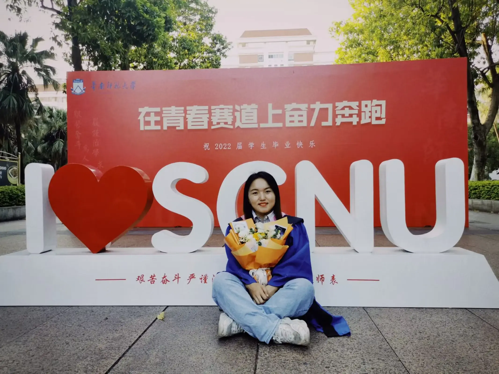
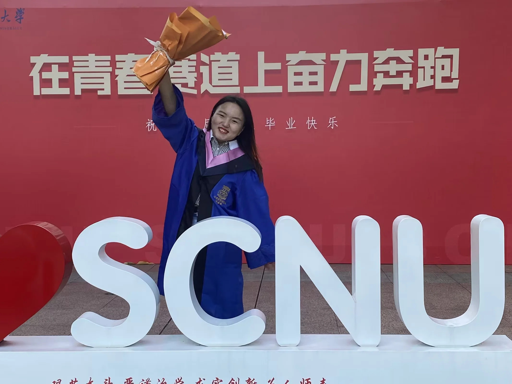
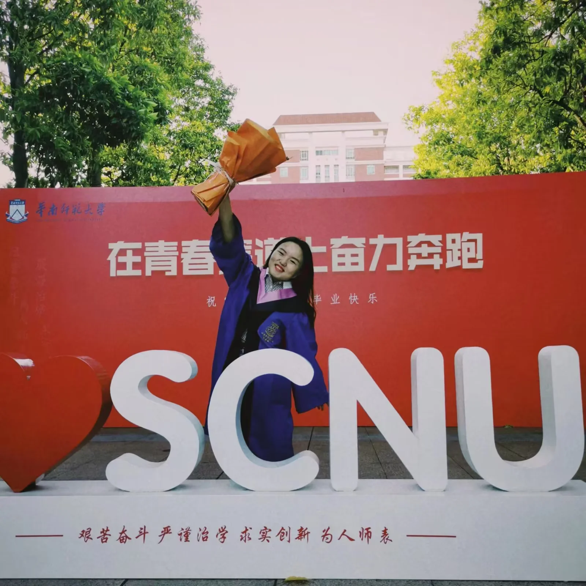
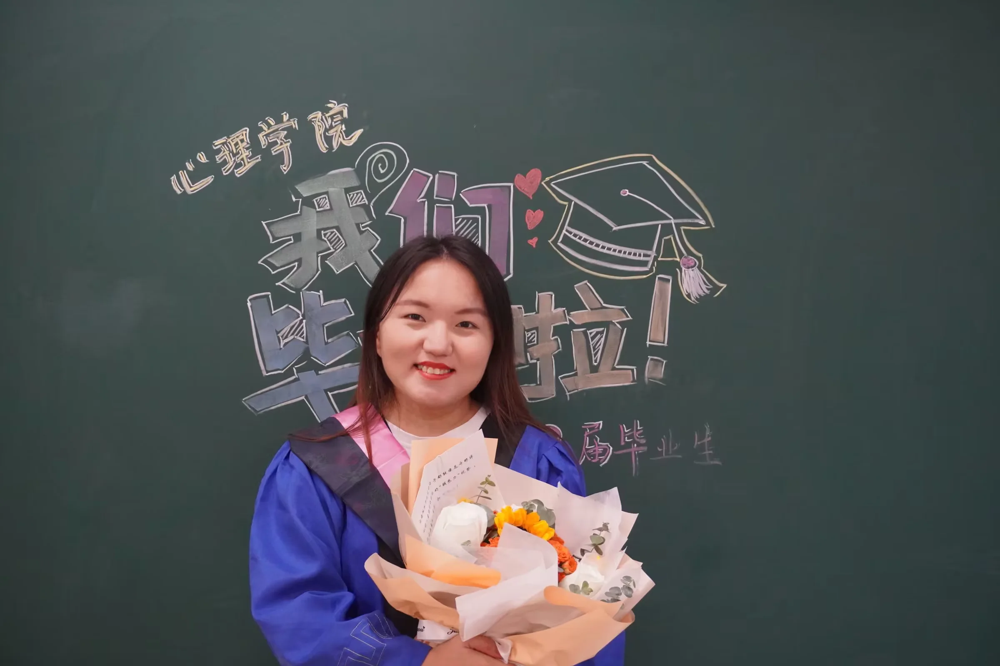
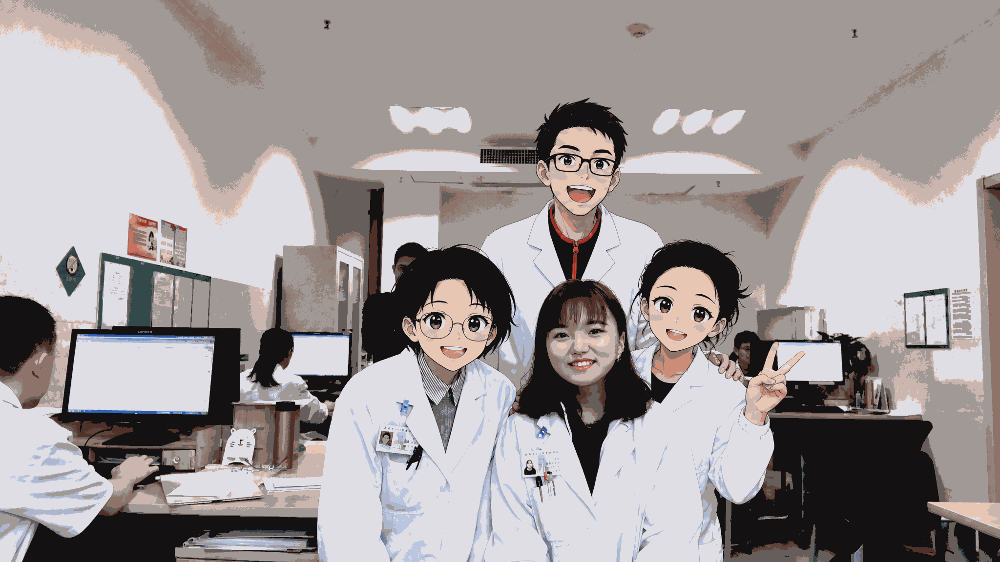
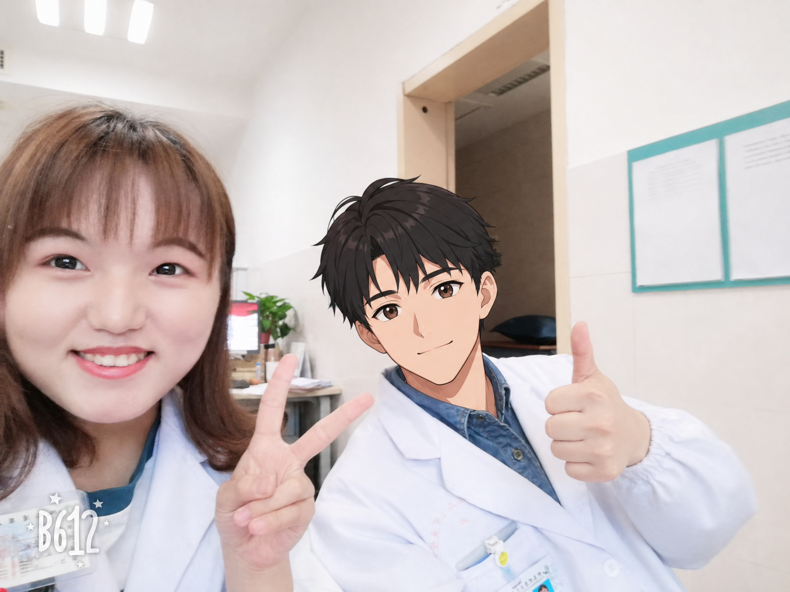
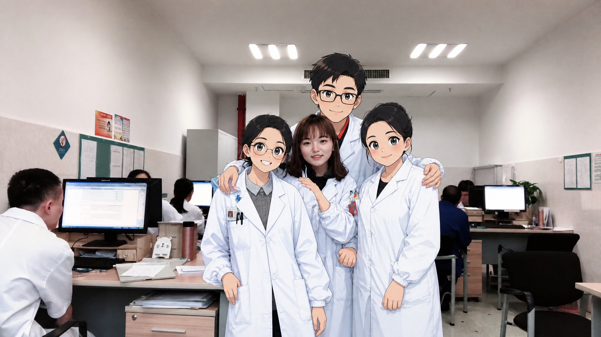
COURSE GOALS
我会评估孩子目前的能力水平，制定长期干预目标，再拆成每周可以观察、每日可以练习的小目标，并结合具体活动和生活场景不断调整，让家长知道为什么练，也更清楚可以怎样配合。
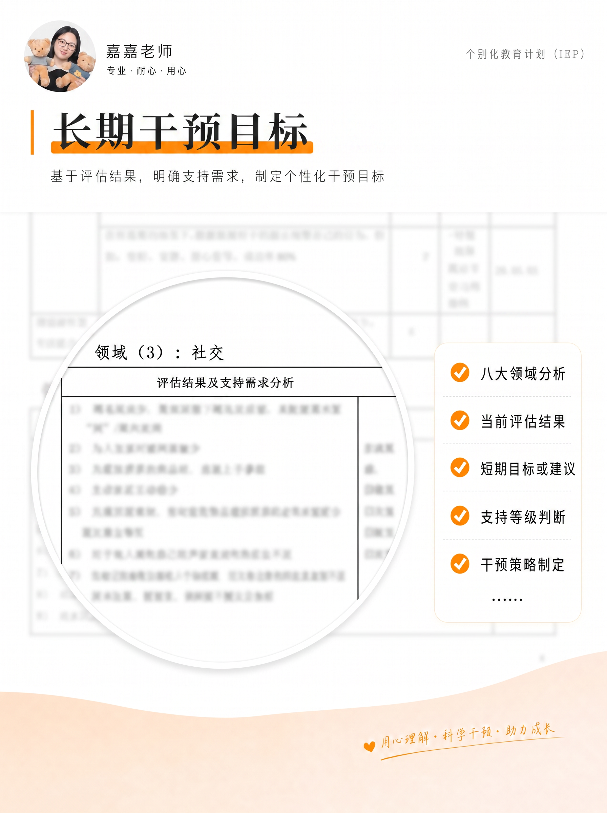
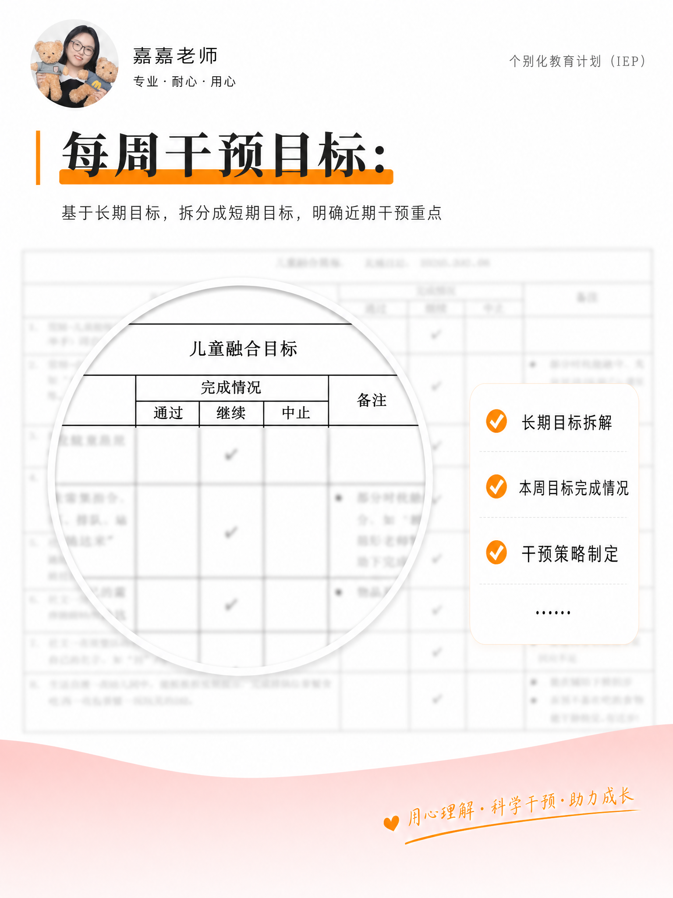
Course Moments
课程不只是发生在教室里，也发生在孩子真实生活的每一个场景里。
点击照片，看看这些支持怎样发生在真实生活里
把干预教学放在孩子最熟悉的场景里，让孩子和家长都能把学到的知识、技能真正应用到日常生活中，真正“泛化”出来。
家庭干预支持入户支持做偏食干预，不是强迫孩子吃下讨厌的食物，而是给他更多尝试的勇气和机会。通过“先……然后……”的提示，并灵活调整食物大小和任务要求，帮助孩子在能够承受的难度中逐步接触不那么喜欢的食物。
幼儿园融合支持在集体活动中，孩子无法理解太多的口头指令。也要考虑到嘈杂环境可能影响孩子辨认和理解信息，尝试使用视觉提示，慢慢地孩子也能少量提示下摆放自己的物品、加入集体活动。
特需儿童幼小衔接不只是提前学知识，而是准备进入小学生活。我会围绕课堂规则、基础学习习惯以及课间课后生活自理，帮助孩子稳一点进入下一阶段。
根据孩子能力安排烘焙操作步骤，在烘焙中学习技能，在体验中收获成长。
在超市购物时，带着孩子主动向店员询问商品位置、记录商品价格，虽然完整表达让她有些紧张，但她还是很好地完成啦！
AI Exploration
我会从真实课堂和孩子的需要出发，用AI辅助生成视觉规则卡、课程材料、观察记录整理、目标拆解和互动练习网页。
希望让一线特教老师、特需孩子家长，能把更多时间留给观察孩子、设计活动，以及陪孩子在真实生活里练习。
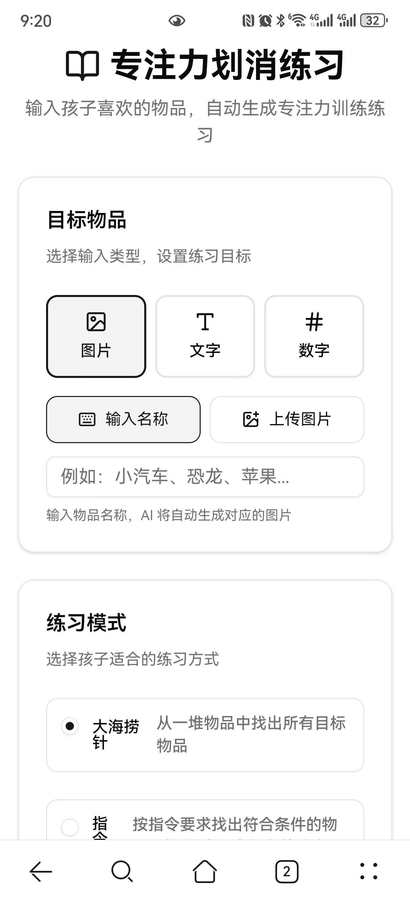
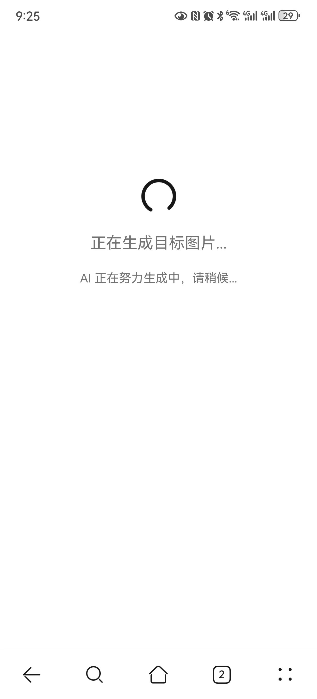
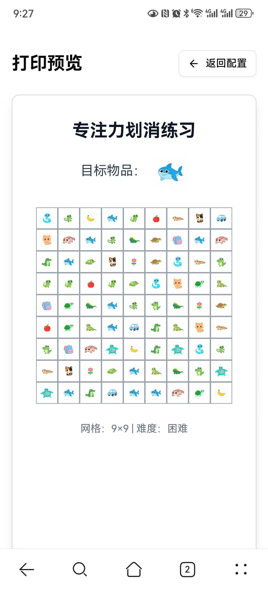
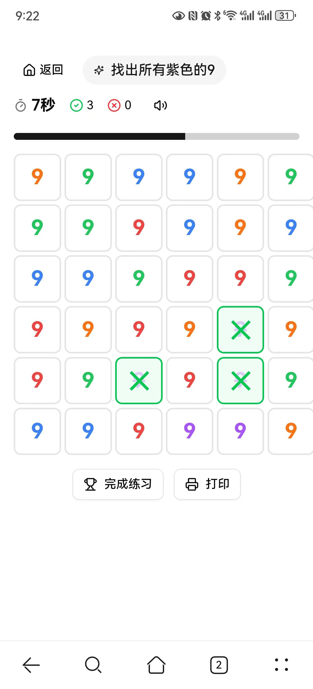
Who I Help
Contact